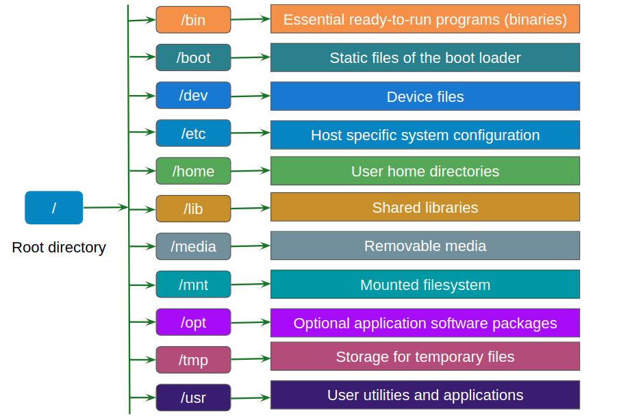

All About Linux
Linux folder usage

File Permissions
Umask
The umask (short for "user file creation mode mask") is a Linux/Unix system setting that determines the default permissions for newly created files and directories. It effectively "masks out" certain permission bits, preventing them from being set when new files or directories are created.
Understanding File and Directory Permissions
In Linux, file and directory permissions are represented by three sets of bits, each corresponding to the user (owner), group, and others. These are usually represented as three digits in octal (base-8), where each digit can be a combination of:
4: Read (r)
2: Write (w)
1: Execute (x)
For example:
7 (4 + 2 + 1) means read, write, and execute permissions.
6 (4 + 2) means read and write permissions.
5 (4 + 1) means read and execute permissions.
666 defined as read and write for everyone.
Default Permissions Before umask
Files: The default permissions for a newly created file are usually 666 (read and write for everyone). Files do not have execute permissions by default.
Directories: The default permissions for a newly created directory are 777 (read, write, and execute for everyone).
How umask Works
The umask subtracts (or masks out) permissions from these defaults. The umask value is subtracted from the default permissions to determine the actual permissions of a new file or directory.
For example:
A umask of 022 masks out the write permission for the group and others:
Files: 666 (default) - 022 = 644 (read and write for the owner, read-only for group and others).
Directories: 777 (default) - 022 = 755 (read, write, and execute for the owner, read and execute for group and others).
Common umask Values
022: Common default value, resulting in 755 for directories and 644 for files.
002: Allows group members to have write permissions, resulting in 775 for directories and 664 for files.
077: Highly restrictive, giving full access only to the owner, resulting in 700 for directories and 600 for files.
chmod
Chmod is use for Modify permission of file/directory
Chown is use for providing permissions or changing the ownership to other User
#change Owner/User
chown "user-name" "file/folder-name"
#change Owner and Group
chown "user-name":"group-name" "file/folder-name"
Chmod calculator
Steps to Add New User
# To add user in linux
sudo adduser <user-name> #it will ask for password enter new password
# After adding the user, you can switch to the new user's shell environment using the following command:
su - <user-name>
# after login with new user, try to execute
apt-get update #you may be get error as incident will be reported.
# update the permissions for new user, intially logout from the new user
exit
# from the root user, execute the following command
sudo visudo
# update members of the admin group
%<username> ALL=(ALL) NOPASSWD:ALL #add this line
Change host name
Linux commands
Mostly Used Commands
| Description | Command |
|---|---|
| Help for commands | man <command> |
| Change directory | cd <directory> |
| List directory contents | ls |
| Print working directory | pwd |
| Create a new directory | mkdir <directory> |
| Remove an empty directory | rmdir <directory> |
| Delete directory (recursively) | rm -r <directory> |
| Remove files | rm <file> |
| Concatenate and display file content | cat <file> |
| Create an empty file | touch <file> |
| Edit/create file with content | vim <file> |
| Vim commands | Insert: i, Save and exit: ESC :wq, Exit without saving: ESC :q! |
| Move or rename files and directories | mv <source> <destination> |
| Copy file | cp <source-file> <destination-file> |
| Copy file to a directory | cp <file> <directory> |
| Modify file/directory permissions | chmod <permissions> <file> |
| Change file/directory ownership | chown <user> <file> |
| Change ownership and group of file | chown <user>:<group> <file> |
File Compression and Archiving
| Description | Command |
|---|---|
| Create a tar archive | tar cf <archive.tar> <file/dir> |
| Extract a tar archive | tar -xvf <archive.tar> |
| Compress files using gzip | gzip <file> |
| Decompress files using gunzip | gunzip <file> |
| Create a compressed tar file | tar -czvf <archive.tar.gz> <file/dir> |
| Extract a compressed tar file | tar -xzvf <archive.tar.gz> |
| Compress files using bzip2 | bzip2 <file> |
| Extract a ZIP file | unzip <file.zip> |
Networking Commands
| Description | Command |
|---|---|
| Test network connectivity | ping <host> |
| Display network configuration | ifconfig |
| Display network connections | netstat |
| Display system routes | route |
| DNS lookup | nslookup <domain> |
| Detailed DNS lookup | dig <domain> |
| Trace network path | traceroute <host> |
| Secure copy files | scp <source> <user>@<host>:<destination> |
| Synchronize files/directories remotely | rsync <source> <destination> |
| SSH into a remote machine | ssh <user>@<host> |
System Monitoring and Management
| Description | Command |
|---|---|
| Display disk usage | df -h |
| Show directory/file disk usage | du -sh |
| Display CPU usage | top |
| Display CPU, RAM usage | htop |
| Display RAM memory usage | free -h |
| Display uptime and load averages | uptime |
| Display running processes | ps aux |
| Display real-time system processes | top |
| Terminate a process | kill <PID> |
| Force terminate a process | kill -9 <PID> |
| Display kernel messages | dmesg |
| View system journal logs | journalctl |
User and Group Management
| Description | Command |
|---|---|
| Add a new user | useradd <username> |
| Change user password | passwd <username> |
| Switch to another user | su <username> |
| Display current user | whoami |
| Add a new group | groupadd <group> |
| Delete a group | groupdel <group> |
| Modify a user | usermod |
| Modify a group | groupmod |
Utilities
| Description | Command |
|---|---|
| Search for files | find <path> -name <pattern> |
| Search for text in files | grep <pattern> <file> |
| Count lines, words, characters in file | wc <file> |
| Display first N lines of a file | head <file> |
| Display last N lines of a file | tail <file> |
| Sort lines in a file | sort <file> |
| Remove duplicate lines in a file | uniq <file> |
| Redirect output to multiple files | tee <file> |
| Monitor command output | watch <command> |
| Display a calendar | cal |
Miscellaneous
| Description | Command |
|---|---|
| Display system date and time | date |
| Display hardware information | lshw |
| Display PCI devices | lspci |
| Display USB devices | lsusb |
| Locate files | locate <file> |
| Find command binary path | which <command> |
| Display environment variables | env |
| Print a message to terminal | echo <message> |
| Display command history | history |
| Schedule recurring tasks | crontab -e |
| Schedule one-time tasks | at <time> |
| Mount a filesystem | mount <device> <directory> |
| Unmount a filesystem | umount <device> |
| Create symbolic link | ln -s <target> <link> |
| Change root directory | chroot <directory> |
| Generate checksum | sha256sum <file> |
Other commands
-
Clean up the packages:
rm -rf /var/lib/apt/lists/*- This command used to clean up the package list cache after installing packages, especially in Docker, to reduce image size.Advantages: Reduces image size and keeps environments clean.
Disadvantages: Deletes package metadata, requiring you to run apt-get update again before installing or upgrading packages. Not suitable for long-running environments where package management might be needed later.
-
dev/null
In Linux, /dev/null is a special device file known as the "null device" or "null file." It discards anything written to it and immediately returns an end-of-file (EOF) to any process that reads from it. You can think of /dev/null as a "black hole" for data—it simply deletes anything sent to it. This can be useful in several scenarios, especially when you want to suppress output/error or ignore specific data streams.
Common Uses of /dev/null:
-
Suppress Command Output.
You may want to run a command without displaying any output. By redirecting the output to /dev/null, you effectively ignore it.Example: Suppresses standard output
In this example, ls would normally list directory contents, but by redirecting > it to /dev/null, the output is discarded and not shown in the terminal.
-
Suppress Error Messages.
Sometimes, you only want to discard error messages, which are typically directed to the standard error (stderr) stream (file descriptor 2).
Example: Suppresses only the error output
This command tries to list a file that doesn’t exist. Normally, it would produce an error message, but by redirecting 2> to /dev/null, you discard only the error output and keep the standard output unaffected.
-
Suppress All Output (Standard and Error)
In some cases, you may want to suppress both standard output and error messages from a command.
Example: Suppresses both standard output and error output
Here, > redirects standard output, and 2>&1 redirects standard error to the same place as standard output, which is now /dev/null. This effectively hides all output from ls, including any error messages.
-
Run Command in Background Without Output
When running a command in the background, the output can clutter the terminal. Sending output to /dev/null avoids this.
Example: Runs
pingin the background without showing outputThis runs ping in the background for 4 packets, discarding all output, so you won’t see any results or messages in the terminal.
-
Check if a File or Directory Exists Without Output
Sometimes, you only need to check if a file or directory exists without producing any output. /dev/null helps here by discarding the output of the command.
Example:
# Checks if a file exists without output if ls /path/to/file > /dev/null 2>&1; then echo "File exists." else echo "File does not exist." fiIn this example, ls checks if the file exists. If it does, the script echoes "File exists." If not, it says "File does not exist." The command's output is sent to /dev/null, so you don’t see anything unless there is a specific message in the if or else statement.
Summary
Suppress command output: command > /dev/null
Suppress error messages: command 2> /dev/null
Suppress both output and error: command > /dev/null 2>&1
Run in background without output: command > /dev/null 2>&1 &
-